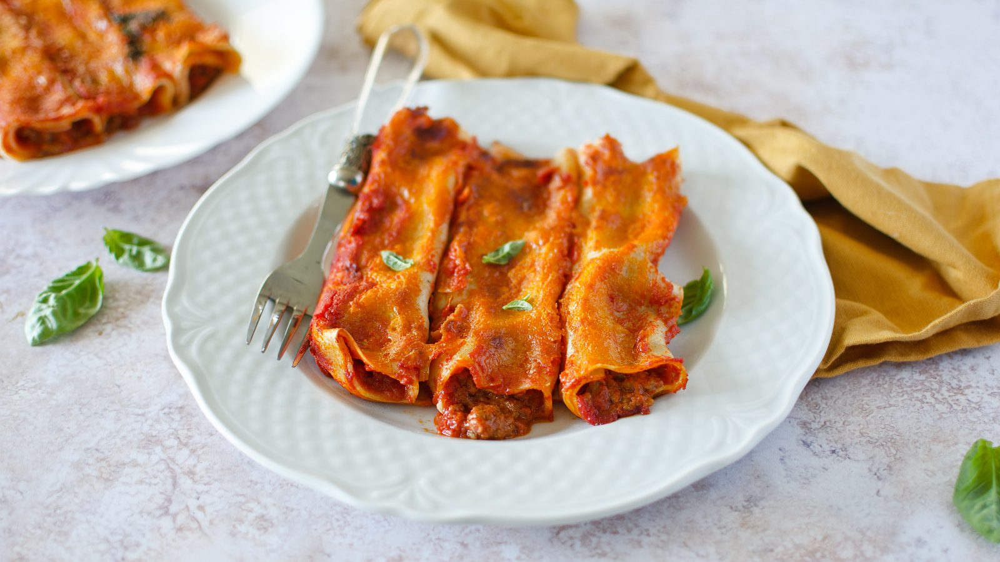
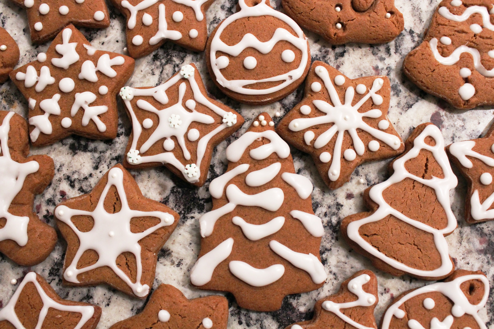

Cannelloni
- Difficulty: Easy
- Preparation: 90 min
- Cooking: 50 min
- Serves for: 4 people
- Cost: Low
by Bruno Barbieri

These succulent pasta cylinders filled with a mix of meat and sausage, topped with béchamel sauce and tomato are a typical first course from Emilia. Rich and tasty, cannelloni are perfect for special occasions.
Ingredients
For the pasta
- 100 g flour 00
- 1 eggs medium
For the filling
- 200 g sausage
- 300 g minced beef
- 80 g onions
- 60 g celery
- 80 g carrots
- 50 g red wine
- 300 g tomato puree
Preparation and Baking
- Step
To prepare the cannelloni start with the seasoning. Clean and finely chop celery, carrot and onion. Then remove the sausage casing and chop with a knife. At this point move to the stove. In the hot saucepan with a drizzle of oil, pour in the sausage and let it brown thoroughly. When nicely browned add the chopped vegetables and stir, let stew for 5-6 minutes. Add the ground beef, stir and turn up the heat. Let it brown unhurriedly. Deglaze with the red wine 6 and stir again.
- Step
As soon as the alcohol has evaporated, add the tomato puree. Stir to incorporate it and rinse the pot with a little water to collect the leftover; then season with salt. Cover with a lid with a small vent and cook for one hour. Check from time to time. Meanwhile, make the egg pasta. Pour the flour inside a bowl and add the lightly beaten egg. Knead the dough with your hands until the ingredients are blended. Then transfer the dough to a pastry board and knead it again until it is smooth and homogeneous, firm and elastic, and given a spherical shape.
- Step
Prepare the béchamel sauce. First you need to heat the milk, flavored with nutmeg and salt. In another pan pour the butter and let it melt completely. At this point add the sifted flour and stir quickly. After a couple of minutes you will get a hazelnut-colored roux, remove from the heat a moment and pour in the milk, now hot. Stir continuously and wait until the béchamel is thick but fluid, about 4-5 minutes. Transfer the béchamel to a glass bowl and cover with plastic wrap. Once cold, if it is too thick, thicken it with a little milk.
- Step
Take your egg dough loaf that will have rested and reached the right elasticity and divide it in two. Roll out each part of the dough with the sheeter machine starting from the widest width to the narrowest. You will get a sheet of dough about 2 mm thick. In the absence of the dough rolling machine, you can roll out the sheet by hand, using a lightly floured rolling pin. Cut out 8 rectangles 10X14 cm 21. Once you have obtained your pasta rectangles blanch them one at a time for about 1 minute in boiling, lightly salted water. Drain them and transfer them to a tray where you will have placed a kitchen cloth, it is important to roll out the various rectangles perfectly without overlapping them, if you prefer you can pass them in cold water to stop them cooking. In the meantime the meat sauce will be ready and cooled, keep 250 g of it aside.
- Step
To the remaining ragout add grated cheese and season with pepper. Mix and place back in the refrigerator. Take a rectangle of dough and stuff it with the meat sauce on one side only, leaving a couple of cm from the edge on the wide side. Then roll the pastry on itself. Seal the dough to form cylinders. Spread a couple of tablespoons of béchamel sauce on the bottom of a 20x30 cm 31 baking dish. Place your cannelloni. Top them with the remaining béchamel sauce and the 250 g of ragu sauce kept aside, 15 g of grated cheese 32 and bake in a static oven preheated to 200° for 15 minutes on the medium shelf and 5 minutes at 240°, in grill mode, on the shelf just higher, until you get a golden crust. All that remains is for you to serve your cannelloni still warm 33!
Roast veal with potatoes
- Difficulty: Medium
- Preparation: 30 min
- Cooking: 60 min
- Serves for: 4 people
- Cost: High
by Antonino Cannavacciuolo

Roast veal with potatoes is a great classic to enjoy at the dinner table with the family reunited. The tender slices of meat served with gravy and the ever-present baked potatoes have always been a guarantee to bring adults and children together.
Ingredients
- 600 g rump of veal
- 1 kg potatoes
- 50 g white wine
- 2 sprigs rosemary
- 2 cloves garlic
- 40 g extra virgin olive oil
- Fine salt
- Black pepper
Preparation and Baking
- Step
To begin with, wash, dry and peel the potatoes. add rosemary and garlic. then transfer to a baking tray and bake in the oven at 200° for 20 minutes.
- Step
Bind the meat and season it with all the flavourings. Heat the oil in a frying pan and add the meat, allowing it to brown on all sides over medium-high heat: so every minute or so you will have to turn it with tongs or wooden spoons, making sure the meat browns well.
- Step
When all sides of the piece of meat are well sealed, deglaze with the white wine and let it evaporate for a few moments, then turn off the flame. Place the meat in the centre of the pan, making space between the potatoes.
- Step
Sprinkle the piece of veal with the sauce and stick a roasting thermometer into the centre of the meat. Then continue cooking, still at 200°, approximately 35 minutes. When this time has elapsed, your roast veal with potatoes will be ready: wait a few minutes before removing the string and slicing this goodness
- Step
When turning the meat, remember never to use sharp utensils as the juices could escape and make the meat tough. If you want to make the meat more fragrant, add a few sage leaves and a bay leaf to the rosemary or add them to the potatoes.
Gingerbread Cookies
- Difficulty: Easy
- Preparation: 30 min
- Cooking: 45 min
- Serves for: 4 people
- Cost: Low
by Iginio Massari

Gingerbread is a sweet food product. Specifically, a dough made by mixing a mixture of honey or molasses and beet or brown sugar, flavored with ginger and cinnamon, with the possible addition of cloves, is called gingerbread.
Ingredients
- 5 g ginger powder
- 350 g flour 00
- 1 pinch nutmeg
- 5 g cinnamon powder
- ¼ teaspoon baking soda
- 160 g sugar
- 110 g cold butter
- 1 egg
- 1 pinch fine salt
- 50 g honey
Preparation and Baking
- Step
To make the gingerbread cookies, start with the spiced shortbread: pour the flour and all the spices: ground cloves, cinnamon powder, grated nutmeg and ginger powder into the blender fitted with blades. Also add 1/4 teaspoon baking soda, the granulated sugar. Then add a pinch of salt and pour in the honey.
- Step
Pour the egg into the center and incorporate it into the dough first with a fork then with your hands. Knead quickly and once the dough has taken on consistency, form a flat ball and cover it with plastic wrap. Place the dough to firm up in the refrigerator for at least 30 minutes.
- Step
Take the dough, roll it out with a rolling pin on a floured pastry board to a thickness between 7 mm and 1 cm. Cut out the shortcrust pastry with your favorite Christmas shapes; we chose classic gingerbread men. If you want, at this stage you can pierce the cookies at the height of the little heads of the men to pass a ribbon through and be able to hang them on the tree
- Step
With the given amounts you will get about 15 cookies. Transfer the cookies to a drip pan lined with baking paper and bake the cookies in a static oven preheated to 170° for about 15 minutes.